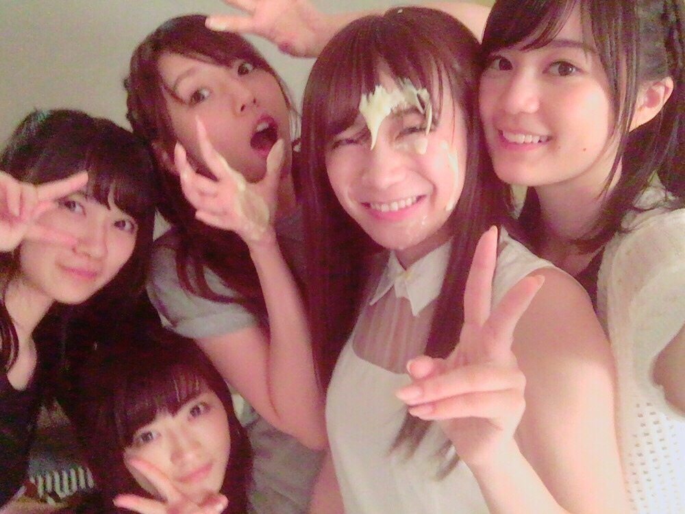
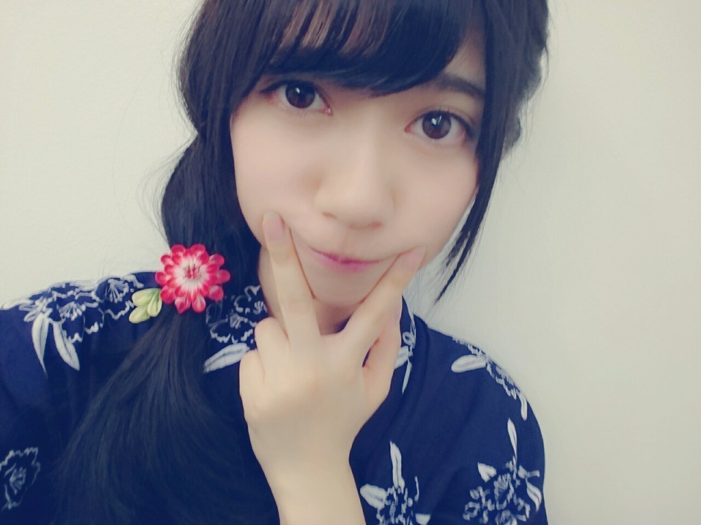

2016/0820Sat揚げない
真夏さん
白石さん
Happy Birthdayです
ここでは恥ずかしいので
短めのご挨拶で、、、(> <)
お二人共大好き
良い一年になりますように
ちなみにね、
真夏さんのお部屋にお邪魔してプチドッキリ？！しました楽しかった
若いって素晴らしいって思いました✨

シュークリーム
私も顔面シュークリームとかケーキやってみたいな憧れですm(._.)m
そして、真夏さんのお部屋に行く前
生田さんが私のお部屋に一瞬遊びに来てくれました
急に、ピンポンがきたものですからビックリしました
そっとお土産をくれました
ありがとうございました(^^)
ツアーの中身の感想は
乃木恋リアルを
やらせて頂きました、、、
まさか、自分に回ってくるとはお恥ずかしい
あの日限定の
ワンワンでした、、、
詳しい内容は来てくれた方に聞いてみてください
あー、恥しい
未だにメンバーにワンワンでしょって言われますm(._.)m
ワンワンって、、、
でも、貴重な経験でした
他にもアルバムジャケットに因んで
赤チーム
青チームに別れての演出
その後のきっかけは
皆で合わさって紫のお衣装を着て歌いました
改めて、きっかけって凄いいい歌詞だなって浸っちゃいました✨
日替わりで披露された
「かき氷の片想い」
「白米様」
まさか、沢山あるアルバム楽曲の中からかき氷の片想いを披露できるって決まったときは嬉しかったです
２期生全員での楽曲大切にしたいです。
白米様
コールも凄かったです
心の底から笑顔になれました
そして、振り付けにも注目して欲しいです
ペンライトも赤と緑を振ってくれる方が多かった気がします(^^)
リンゴカラー皆さんの意識の高さに驚かされました✨
これはお気に入りの画像

さゆりんご軍団のあたたかさが背中から滲み出ている（´-`）
キリッともできる

さゆりんご軍団で撮影した帰り撮影で使ったりんごを貰って帰ったのにまたコンビニでりんごを手にとっていた私
意識高い、、、

今年の夏も沢山いい思い出が出来ました
いい事だ
でも、まだ夏は終わってません今年も安全第一で
楽しみたいです✨
夏の思い出

個人的に、新たな事をやりたい
行ったことのない国や地域に行ってみたい
すぐに新しいブログ
上げます書きたい思いがたくさんあります
最後まで読んで頂きありがとうございました(^^)
良かったらまた覗きに来て下さい
2016/08/20 20:24
コメント(903)
蘭世ちゃーん。
ブログありがとう。
全ツ、福岡公演、参戦したよ。
おつかれさん。
次は、神宮、楽しみ。
体を休めて、また、頑張ろうね！
全ツ、福岡公演、参戦したよ。
おつかれさん。
次は、神宮、楽しみ。
体を休めて、また、頑張ろうね！
らんぜちゃん
かわいいですね！！！
あと１ヶ月ちょっとでらんぜちゃんの誕生日～！
楽しみです！！
アンダラでお祝いしますね
かわいいですね！！！
あと１ヶ月ちょっとでらんぜちゃんの誕生日～！
楽しみです！！
アンダラでお祝いしますね
ブログ更新ありがとう！
乃木恋リアル見たかったな…
残念でならない…
次のブログも楽しみにしてます！
らんぜの勢いとまらんぜ〜〜〜！
乃木恋リアル見たかったな…
残念でならない…
次のブログも楽しみにしてます！
らんぜの勢いとまらんぜ〜〜〜！
名古屋でさゆりんご軍団が見られて、幸せでした。あのゆるさはクセになる。
らんちゃ〜ん(σ๑>◡<)σツンツン
らんちゃんて最高だな！
らんちゃんて最高だな！
蘭世ブログ更新ありがとう！
蘭世の乃木恋見れて、すごく嬉しい笑
仙台3公演行けてすごく楽しかったよ！
ワンワン(^^)(^^)
さぁ、いよいよバスラだね！
バスラは3日間行くからね！
元気にがんばれ！
蘭世の乃木恋見れて、すごく嬉しい笑
仙台3公演行けてすごく楽しかったよ！
ワンワン(^^)(^^)
さぁ、いよいよバスラだね！
バスラは3日間行くからね！
元気にがんばれ！
こんばんは
ブログ更新ありがとうございます☺️┐ﾍﾟｺﾘ
蘭世の誕生日は何があるか楽しみだね。
顔面ケーキ？
っていう間にあと1ヵ月で誕生日じゃね。
来週は神宮。怪我なく頑張ってね
psキャプテンが復帰する事を祈ります
ブログ更新ありがとうー!!
蘭世の勢い止まらんぜーヽ(・∀・)ノ
乃木恋見たかった…
ライブ満足出来たみたいで良かった!
残すは神宮だねー
楽しみにしてます＼(^o^)／
蘭世の勢い止まらんぜーヽ(・∀・)ノ
乃木恋見たかった…
ライブ満足出来たみたいで良かった!
残すは神宮だねー
楽しみにしてます＼(^o^)／
らんぜちゃん
こんばんわー。
昨日、一昨日、福岡観に行ったよー
こんばんわー。
昨日、一昨日、福岡観に行ったよー
さゆりんご軍団と真夏さんリスペクト軍団で何かゲームをして欲しい！
蘭世ライブお疲れ様でした！
モバメからも楽しんでるんだなぁって伝わってきてます。
来週は神宮…その次の週が全握とイベント続きになって大変だろうけど頑張ろうね！
またコメントしに来ますﾊﾞｲﾊﾞｲ(ヾ(´・ω・｀)
leaf⊿
モバメからも楽しんでるんだなぁって伝わってきてます。
来週は神宮…その次の週が全握とイベント続きになって大変だろうけど頑張ろうね！
またコメントしに来ますﾊﾞｲﾊﾞｲ(ヾ(´・ω・｀)
leaf⊿
らんらん、おぱよん。
モバメたくさんありがとう。
やはり、「おはよう」とかさ、
「おにゃすみ」とかって、うれしいよね。
まてよ。。おにゃすみに猫らんぜ。。。
やはり
にゃんぜ*\(^o^)/*にゃんぜ*\(^o^)/*←()
モバメたくさんありがとう。
やはり、「おはよう」とかさ、
「おにゃすみ」とかって、うれしいよね。
まてよ。。おにゃすみに猫らんぜ。。。
やはり
にゃんぜ*\(^o^)/*にゃんぜ*\(^o^)/*←()
頻繁な更新ありがとう〜！
乃木恋企画見たかったなあ（笑）絶対可愛かったに違いない！
さゆりんご軍団、楽しそうで何より。安心できる空間があるっていいこと。
乃木恋企画見たかったなあ（笑）絶対可愛かったに違いない！
さゆりんご軍団、楽しそうで何より。安心できる空間があるっていいこと。
らーんぜ！
ちゃんと返事してますよ(-_^)
蘭世って可愛いな！
おにゃすみなさい
夢で逢いましょう(-_^)
以上、坊ちゃんでした
ちゃんと返事してますよ(-_^)
蘭世って可愛いな！
おにゃすみなさい
夢で逢いましょう(-_^)
以上、坊ちゃんでした
こんばんは。
充実感がブログから伝わってきますね。楽しそうで何よりです。
ラスト神宮頑張ってください、応援してます。
充実感がブログから伝わってきますね。楽しそうで何よりです。
ラスト神宮頑張ってください、応援してます。
ついさっき、前回のブログに
コメントしたばかり、、
あらためて、
体調に気をつけて
ガンバってね。
コメントしたばかり、、
あらためて、
体調に気をつけて
ガンバってね。
ライブでお疲れのところに、メールたくさんありがとうございました。
今年の全国ツアー、テラダ犬をアリーナ最前ブロックに居る時に見られたのが、一番の思い出です。
でも、白米様を良い席で見られなかったのが心残り。サンクエトワールみたいに単独イベントやって欲しいなって思います。またコメントします。
今年の全国ツアー、テラダ犬をアリーナ最前ブロックに居る時に見られたのが、一番の思い出です。
でも、白米様を良い席で見られなかったのが心残り。サンクエトワールみたいに単独イベントやって欲しいなって思います。またコメントします。
あとニャンぜおやすみなさぁいฅ^•ω•^ฅﾆｬｰ
らんぜ◎お久しぶりです（´-`）.｡oO
最近コメントサボってたこと気づいてたかな、、？
モバメにて、返事してってきたので
これはコメントしなきゃなって
思って久しぶりにきたよ＼(^o^)／
受験で６月からなかなか会いに行けてない、、神宮と全国握手会で久しぶりにあえます～～～涙
15thは個握行けないのだ…>_<…
だからこの2日を思い切りたのしみます
テラダちゃんがツアー最後まで全力で突っ走れますように、！では！
最近コメントサボってたこと気づいてたかな、、？
モバメにて、返事してってきたので
これはコメントしなきゃなって
思って久しぶりにきたよ＼(^o^)／
受験で６月からなかなか会いに行けてない、、神宮と全国握手会で久しぶりにあえます～～～涙
15thは個握行けないのだ…>_<…
だからこの2日を思い切りたのしみます
テラダちゃんがツアー最後まで全力で突っ走れますように、！では！
ワンぜ笑
らんぜちゃーん
らんぜの乃木恋見たかったー泣
見れた人羨ましい笑
らんぜはさゆりんご軍団として意識高いねー笑
俺もこれからリンゴを見かけたら手に取ってみるわ！
とにかく毎回のコメントで行ってるけど怪我なくこのままツアーを終えてねー
らんぜちゃーん
らんぜの乃木恋見たかったー泣
見れた人羨ましい笑
らんぜはさゆりんご軍団として意識高いねー笑
俺もこれからリンゴを見かけたら手に取ってみるわ！
とにかく毎回のコメントで行ってるけど怪我なくこのままツアーを終えてねー
はーい(^^)/すっくんです(￣ー￣)
返事したよー！
ブログ更新ありがとう( ´ ▽ ` )ﾉ
その日の公演いってないから乃木恋リアルが気になって気になって仕方がないんだよね。
一体ワンワンってなに？
白米様はすごく盛り上がりそうだよね♪
神宮の最終日で披露するのかな？
その時の為にコール練習しておくね(^^)/
あっ、それと今日はいっぱいモバメ送ってくれてありがとうね(*^^*)
返事したよー！
ブログ更新ありがとう( ´ ▽ ` )ﾉ
その日の公演いってないから乃木恋リアルが気になって気になって仕方がないんだよね。
一体ワンワンってなに？
白米様はすごく盛り上がりそうだよね♪
神宮の最終日で披露するのかな？
その時の為にコール練習しておくね(^^)/
あっ、それと今日はいっぱいモバメ送ってくれてありがとうね(*^^*)
待ってましたー
皮むきりんご俺も食べたよー
あれ美味しいょね
蘭世に質問やねんけど
関西弁使う男の子ってどう思う？
皮むきりんご俺も食べたよー
あれ美味しいょね
蘭世に質問やねんけど
関西弁使う男の子ってどう思う？
ブログ更新ありがとうらんぜー
いくちゃん優しいね
まなったんの誕生日サプライズ成功して良かったね
俺も顔面シューやられたことあるよー
らんぜの乃木恋リアル見たかったなー
福岡ライブお疲れ様！
神宮も頑張れファイト応援してるよー
それじゃ
じゃねばーい
はるき
いくちゃん優しいね
まなったんの誕生日サプライズ成功して良かったね
俺も顔面シューやられたことあるよー
らんぜの乃木恋リアル見たかったなー
福岡ライブお疲れ様！
神宮も頑張れファイト応援してるよー
それじゃ
じゃねばーい
はるき
蘭世＼(^o^)／お疲れ様でした
福岡お疲れ様でした
次のBDライブも頑張って
蘭世本当に可愛すぎる(｡>﹏<｡)
最後の写真の衣装も髪型も、全部似合って可愛いです
ちなみに、4枚目の皮むきりんごも蘭世の手ですか？
これからも頑張って(/･ω･)/
福岡お疲れ様でした
次のBDライブも頑張って
蘭世本当に可愛すぎる(｡>﹏<｡)
最後の写真の衣装も髪型も、全部似合って可愛いです
ちなみに、4枚目の皮むきりんごも蘭世の手ですか？
これからも頑張って(/･ω･)/
ハロハロハロー
暴走電機屋やよー
お仕事終わり‼︎
まいやんちゃん、真夏さんhappybirthdayだね‼︎
たくさんお祝いしてあげよ♪( ´▽｀)
暴走電機屋より。
こんぱんは！
蘭世ブログありがと！！
僕も仙台ののぎ恋まだ忘れられない、、蘭世可愛いすぎて！ 本当に嬉しかった！
最近の蘭世は元気よく見えて何より
大好き！
蘭世ブログありがと！！
僕も仙台ののぎ恋まだ忘れられない、、蘭世可愛いすぎて！ 本当に嬉しかった！
最近の蘭世は元気よく見えて何より
大好き！
蘭世可愛い
こんばんは蘭世さん^_^
ブログと沢山のモバメありがとうございます( ´ ▽ ` )ﾉ
顔面シュークリームorケーキ、一度は体験したいですね！
充実した2016年の夏を過ごせそうですね(^^)
白米様良い曲です！
蘭世さんのやりたい事が実現出来ますように…
いつもモバメ&ブログありがとうございます(^^)
ブログと沢山のモバメありがとうございます( ´ ▽ ` )ﾉ
顔面シュークリームorケーキ、一度は体験したいですね！
充実した2016年の夏を過ごせそうですね(^^)
白米様良い曲です！
蘭世さんのやりたい事が実現出来ますように…
いつもモバメ&ブログありがとうございます(^^)
ブログ更新ありがとー
ツアーお疲れ様！
乃木恋やったんだねぇ
見たかったなぁ
今回は大阪公演しか行けなかったけどすごい楽しいライブだったよ！
白米様もきけて嬉しかったなぁ
ただコールの動画が大阪公演のあとに公開だったからコール盛り上がれなかったのが少し残念だったかな
あと最近いくちゃんのブログによく出ている気がする
最近仲いいのかな？
またエピソードがあったら書いてほしいな
またブログ待ってます！
ツアーお疲れ様！
乃木恋やったんだねぇ
見たかったなぁ
今回は大阪公演しか行けなかったけどすごい楽しいライブだったよ！
白米様もきけて嬉しかったなぁ
ただコールの動画が大阪公演のあとに公開だったからコール盛り上がれなかったのが少し残念だったかな
あと最近いくちゃんのブログによく出ている気がする
最近仲いいのかな？
またエピソードがあったら書いてほしいな
またブログ待ってます！
真夏さんリスペクト軍団に負けずにがんばって！
蘭世ちゃんブログ更新ありがとう！
てーらーだーさ～ん♪
おにゃすみZzz…。
名古屋のしょ～やんより122
おにゃすみZzz…。
名古屋のしょ～やんより122
らんぜー :

こんばんは〜
福岡見に行ったよ!!
ライブ自体もすごい楽しかったし蘭世もすごい可愛かった！
今日はモバメ沢山送ってくれてありがとう｡
体調には気を付けてね
福岡見に行ったよ!!
ライブ自体もすごい楽しかったし蘭世もすごい可愛かった！
今日はモバメ沢山送ってくれてありがとう｡
体調には気を付けてね
こんばんは(^O^)／
今日はいっぱいメールありがと♪( ´▽｀)
凄く嬉しかったな（≧∇≦）
蘭世さんからのメールでいつも元気になれるよ☆
残すはバースデーライブのみだね♪
初日に参戦するからよろしくお願いしますm(_ _)m
蘭世さんのマフラータオル持ってくよ〜〜(*^o^*)
あとベースボールシャツが届いてればきてくよ〜〜☆
それでは今日も一日お疲れ様でした☆
明日も蘭世さんにとって素晴らしい1日になりますように＼(^o^)／
おやすみなさい☆
今日はいっぱいメールありがと♪( ´▽｀)
凄く嬉しかったな（≧∇≦）
蘭世さんからのメールでいつも元気になれるよ☆
残すはバースデーライブのみだね♪
初日に参戦するからよろしくお願いしますm(_ _)m
蘭世さんのマフラータオル持ってくよ〜〜(*^o^*)
あとベースボールシャツが届いてればきてくよ〜〜☆
それでは今日も一日お疲れ様でした☆
明日も蘭世さんにとって素晴らしい1日になりますように＼(^o^)／
おやすみなさい☆
地方お疲れ様！！
神宮も最高のらいぶにしようっ！！！
福岡公演お疲れ～！
神宮でのBirthDay Live頑張ってね☆彡
神宮でのBirthDay Live頑張ってね☆彡
らんぜ
こんばんは！
乃木恋リアル見たかったよー
握手会とかでやってくれるのかな～
らんぜもそろそろ誕生日だね！
神宮楽しみにしてるから
晴れるといいな
それでは～
こんばんは！
乃木恋リアル見たかったよー
握手会とかでやってくれるのかな～
らんぜもそろそろ誕生日だね！
神宮楽しみにしてるから
晴れるといいな
それでは～
ブログ更新お疲れサマンサ！
ブログで蘭世が食事会に皆勤賞よく頑張りました。
蘭世が1期生と仲良くなろうとしてる姿見て元気もらえた！
あとほん怖やってる時にモバメはビビった笑
ブログで蘭世が食事会に皆勤賞よく頑張りました。
蘭世が1期生と仲良くなろうとしてる姿見て元気もらえた！
あとほん怖やってる時にモバメはビビった笑
ライブ お疲れ様でした ！
ボーダー見たさにバスラに行きたくて
しょうがないです（ ; ; ）笑
3days 大変だと思いますが
風邪や怪我に気をつけて頑張ってください ！
だいすきです 〜〜
ボーダー見たさにバスラに行きたくて
しょうがないです（ ; ; ）笑
3days 大変だと思いますが
風邪や怪我に気をつけて頑張ってください ！
だいすきです 〜〜
名古屋全ツ二日目昼ではかき氷聴けて嬉しかった。
白米様はいつかきっと。
白米様はいつかきっと。
福岡のツアーは行けなかったのが残念です…。次の神宮、楽しみにしてますね^^
蘭世ちゃんのモバメめっちゃきて、めっちゃ嬉しいのよ。もっと送ってええんやで( ˘ω˘ ) ｽﾔｧ…
蘭世ちゃんのリアル乃木恋見たかったぁぁああああああ
ところで返事はどのようにすればいいのでしょうか？ワン
蘭世ちゃんのリアル乃木恋見たかったぁぁああああああ
ところで返事はどのようにすればいいのでしょうか？ワン
ブログありがとう！！
蘭世もあと1ヵ月で誕生日だね。
もしかしたら岡山で顔面シュークリームあるかもね笑
アンダラ行きたいよ笑
一生蘭世推しのゆうたより
蘭世もあと1ヵ月で誕生日だね。
もしかしたら岡山で顔面シュークリームあるかもね笑
アンダラ行きたいよ笑
一生蘭世推しのゆうたより
蘭世お疲れ様！プチドッキリ成功して良かったね！
名古屋で白米様を生で観れて嬉しかった(^O^)
まだ神宮があるから気を抜かず頑張ろー！
名古屋で白米様を生で観れて嬉しかった(^O^)
まだ神宮があるから気を抜かず頑張ろー！
こんばんは
全国ツアーお疲れ様でした！
かき氷はカッコよく
白米様は可愛く動いている寺田さんの姿
しっかりと目に焼き付けました
わんわん見たかった‥( ´-`)
全国ツアーお疲れ様でした！
かき氷はカッコよく
白米様は可愛く動いている寺田さんの姿
しっかりと目に焼き付けました
わんわん見たかった‥( ´-`)
皮むきりんご、僕も大好きです！
モバメの大量送信、大丈夫です！
気にしないでいいです！
大歓迎です！
ただ返事はどうすればよかったのですか？
モバメの大量送信、大丈夫です！
気にしないでいいです！
大歓迎です！
ただ返事はどうすればよかったのですか？
蘭世の乃木恋めっちゃ見たかったわ〜(笑)
今度握手会でリクエストしていいですかね？？(笑)
ともかく全国ツアーも残り神宮だけ、頑張ってね！
来週めっちゃ楽しみにしてる！
モバメも最近毎日いっぱい送ってくれて凄く嬉しいよ！！
やっぱりモバメがくるとテンションあがるんだよね(笑)
明日からも頑張っていきましょう！
今度握手会でリクエストしていいですかね？？(笑)
ともかく全国ツアーも残り神宮だけ、頑張ってね！
来週めっちゃ楽しみにしてる！
モバメも最近毎日いっぱい送ってくれて凄く嬉しいよ！！
やっぱりモバメがくるとテンションあがるんだよね(笑)
明日からも頑張っていきましょう！


裸足でサマーの衣装似合ってる！めっちゃ可愛い(*^^*) 最近はね、神宮のバースデーライブに向けて、3thバースデーのライブ見てるんだけど、何度見ても蘭世が正規メンバーになった時は感動して泣きそうになる！
まなぼうずと一緒にてらぼうずの写真ブログかモバメで期待して待ってるね(^^)